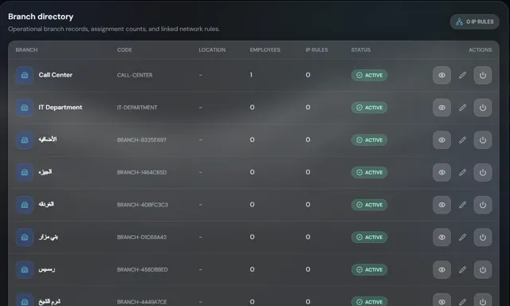
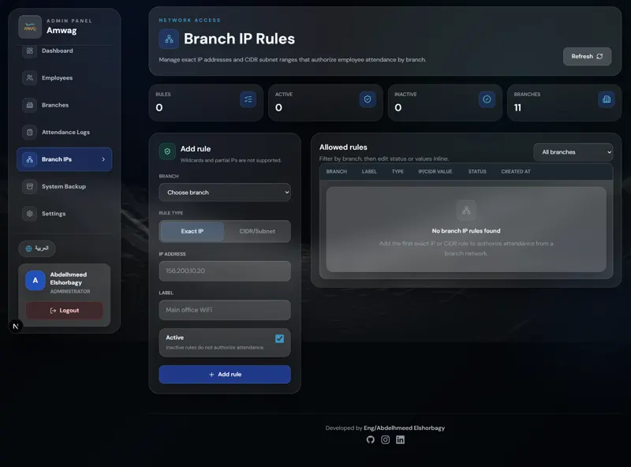
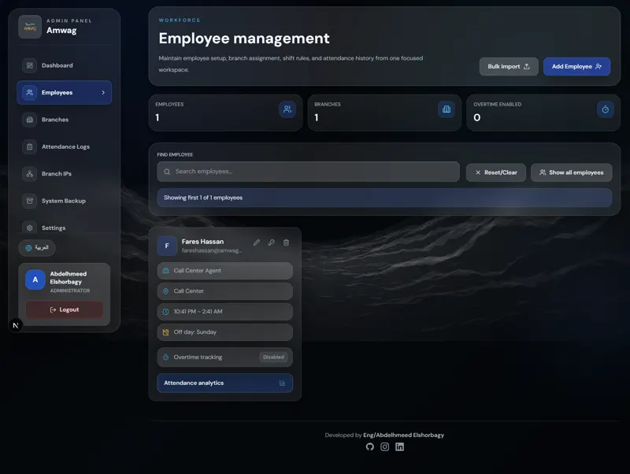
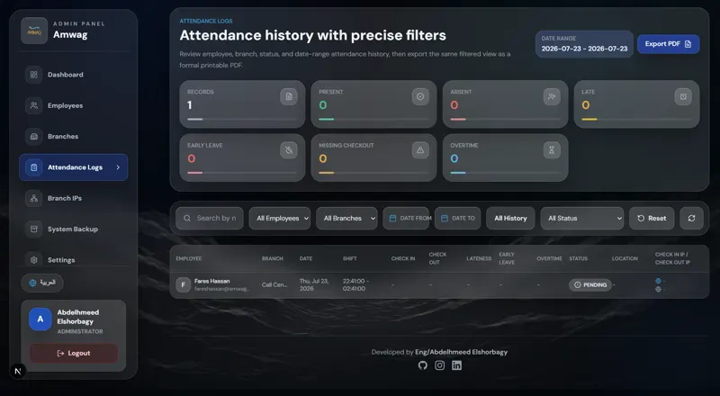
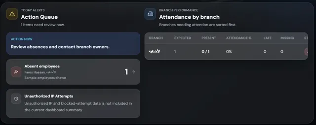
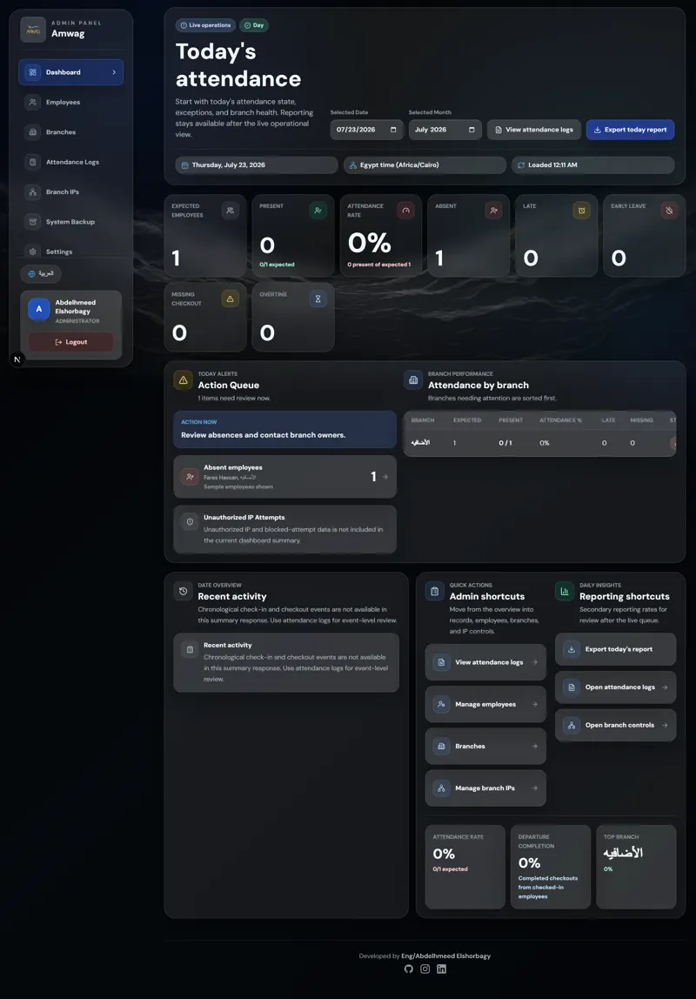
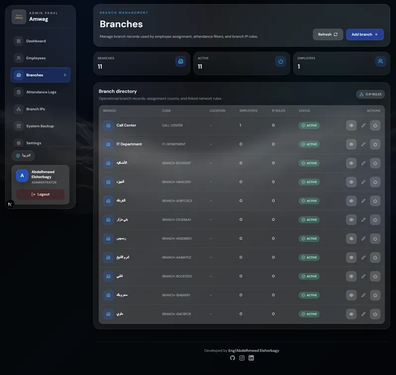
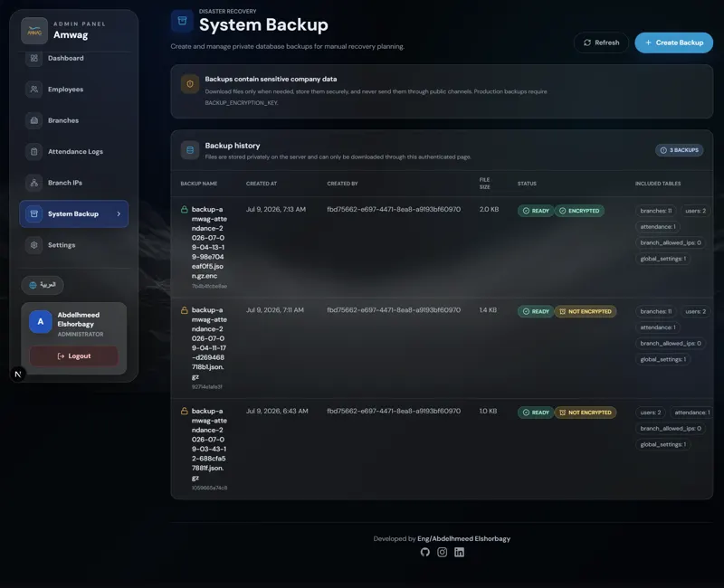

{kind=link}
Problem المشكلة
Attendance records feed payroll and accountability, check-ins must provably happen at the right branch, and off-the-shelf tools didn’t fit the operation’s rules.
Register / Work / Amwag Attendance
Entry قيد
Governance you can actually trust.
A production-grade bilingual attendance platform for a multi-branch company: branch and IP validation, role-based access, analytics, PDF reporting, and backup-and-restore workflows — engineered for the days when things go wrong.

Problem المشكلة
Attendance records feed payroll and accountability, check-ins must provably happen at the right branch, and off-the-shelf tools didn’t fit the operation’s rules.
My part دوري
Designed and built it end to end: the data model and validation architecture, employee and administration experiences, reporting and backup subsystems, and the production deployment.
Outcome النتيجة
The platform runs the company’s real attendance operation across branches, in both languages.Stated Qualitative outcomes only. No invented metrics.
التحقق
Every record earns its trustworthiness before it exists. Identity, branch IP allow-lists, and shift rules are evaluated server-side before any record is written.
A branded, bilingual entry point; language is a first-class toggle, not a setting.
Check-ins must provably happen at the right branch, not from a phone at home.
When a legitimate exception occurs, it goes through an explicit, logged administrative override — instead of loosening the rules for everyone.

Validation strict enough to prevent abuse, forgiving enough for legitimate edge cases like network changes and branch visits.

Only now does the record exist. Administrative changes to records are attributable, so exceptions stay accountable.

Anomalies are surfaced, not buried: the admin home answers “what needs my attention today?” before anything else.

السياق
Attendance sounds like a solved problem until it meets a real company: multiple branches, shifting schedules, employees and administrators with very different needs, and records that feed payroll and decisions. Off-the-shelf tools didn’t fit the operation’s rules — so the company needed its own system, and needed it to be dependable.
Two very different users share one system. An employee needs check-in to take seconds and to trust that their record is correct. An administrator needs to see anomalies quickly, manage exceptions fairly, and produce reports without exporting to spreadsheets and fixing them by hand.
If either experience fails, people route around the system — and the data stops being true.
النهج
I designed and built the platform end to end: the data model and validation architecture, the employee and administration experiences, the reporting and backup subsystems, and the production deployment — plus ongoing product decisions as the operation’s rules evolved.
The strategy: make the honest path the easy path. Check-in is near-instant when you’re where you should be; every exception has a legitimate route through an administrator. Governance features were framed as protecting employees’ records, not surveilling them — which is also simply what the system does.
النظام
The platform is really two products on one data model:
Role-based access control separates what each role can see and change, down to the action level — an administrator of one branch is not an administrator of all branches.
الواجهة
Internal tools deserve design too. The interface uses a calm dashboard language with clear status colors, dense-but-readable tables, and bilingual typography that keeps Arabic and English equally legible. Anomalies are surfaced, not buried: the admin home answers “what needs my attention today?” before anything else.



المفاضلات
IP validation is a strong signal but not a perfect one — networks change, employees travel between branches. The trade-off: strict automatic validation with an explicit, logged administrative override, instead of loosening the rules for everyone.
Backups that have never been restored are a hope, not a plan. Building a real restore workflow took meaningful extra effort and was worth every hour.
النتيجة
Qualitative outcomes — no invented metrics.
The platform runs the company’s real attendance operation across branches, in both languages.Stated
Validation at write time means reports are generated, not reconciled.
Backups, restore, and role-based access make the system dependable, not just functional.Shown
Users forgive a plain interface; they never forgive a wrong record.
Internal platforms live or die on trust. Investing early in validation, auditability, and restore workflows is what separates a tool people use from a tool people work around.
{kind=link}
{kind=link}
{kind=link}
{kind=link}
{kind=link}
{kind=link}